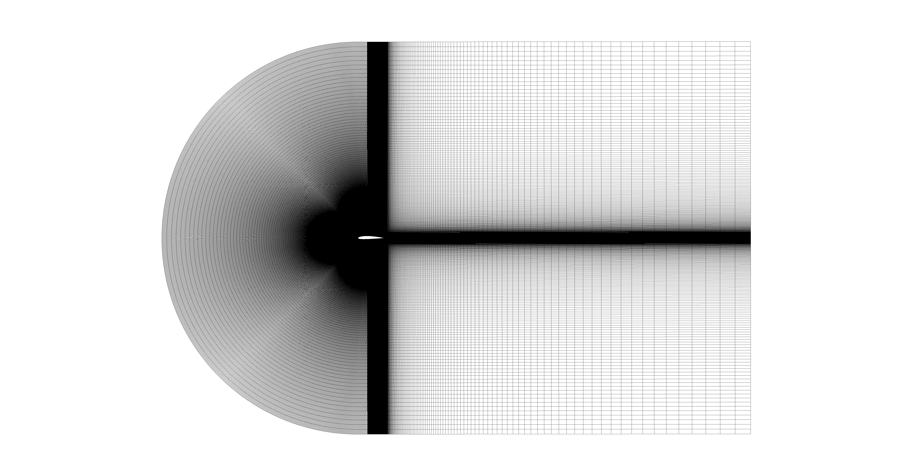
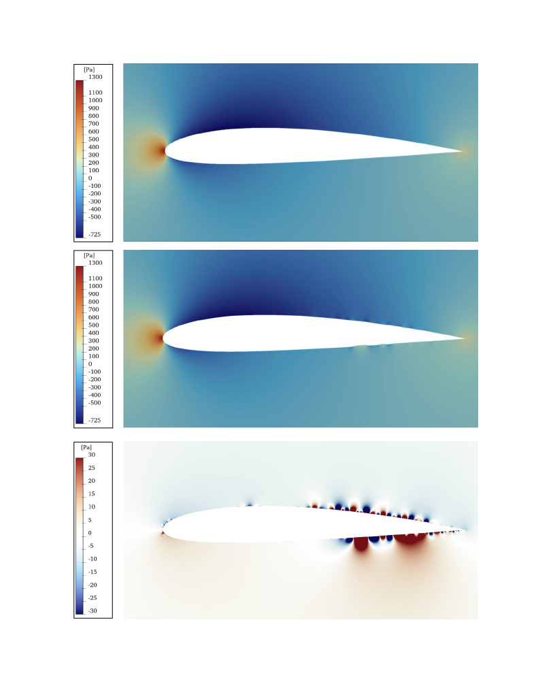
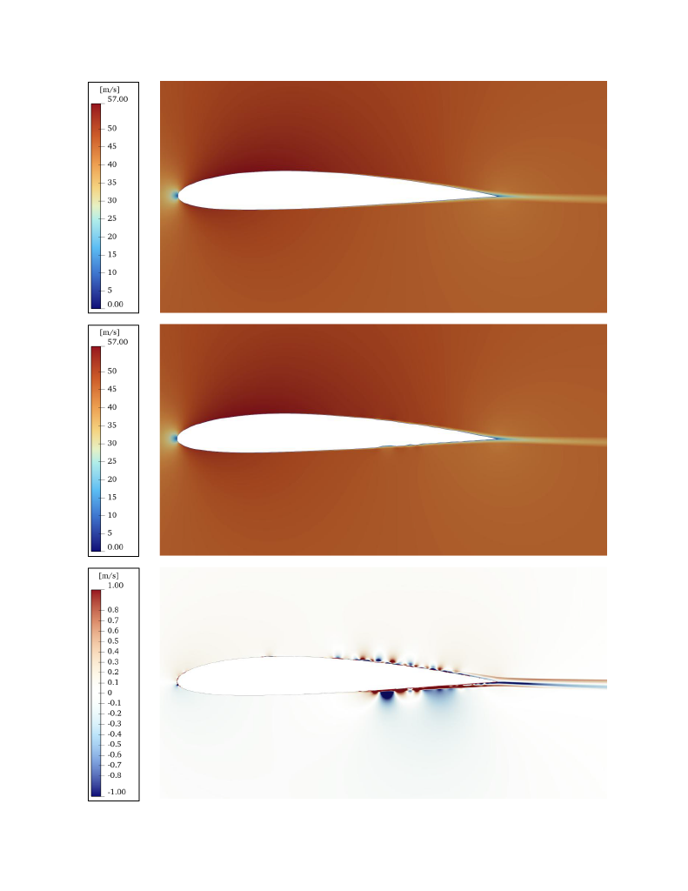
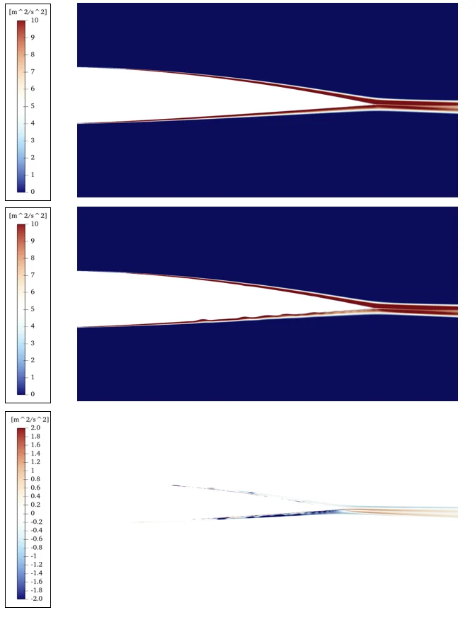

CFD Validation & Genetic Optimization of a 2D NACA 2412 Airfoil
First-Author Research Publication
- Validated ANSYS Fluent simulations against NASA experimental benchmarks, achieving lift and drag coefficient errors under 10% across multiple angles of attack
- Optimized SST Transitional turbulence model for accurate laminar-to-turbulent transition prediction with boundary layer resolution (y+ < 1) and mesh-independent results
- Collaborating with faculty and PhD researchers to apply Python-based genetic algorithm optimization, identifying geometries that reduce drag and improve aerodynamic efficiency
- Preparing findings for peer-reviewed publication as lead author
Mesh Development & Independence Study
Developed a structured C-grid topology with progressive refinement toward the airfoil surface to resolve boundary layer gradients. Conducted a systematic mesh independence study, iterating through increasingly fine meshes until lift and drag coefficients converged within acceptable tolerance. The final mesh balances computational efficiency with the resolution required for accurate transition prediction.
Final mesh topology — C-grid with inflation layers for boundary layer resolution (y+ < 1)
Turbulence Model Calibration
The SST Transitional model's Cθt parameter controls transition onset sensitivity. Systematic variation revealed that reducing Cθt from default values promoted earlier transition, which decreased drag underprediction. Verification of earlier transition behavior confirmed predictions aligned more closely with experimental observations, with optimal accuracy occurring near Cθt = 0.0007.

Effect of Cθt variation on aerodynamic prediction error for NACA 2412 at Re = 3.1×10⁶
Baseline vs. Optimized Geometry Analysis
The genetic algorithm produced an optimized airfoil geometry that outperforms the baseline NACA 2412 in lift generation. Post-processing in ParaView revealed the mechanism: the optimized shape introduces localized surface perturbations near the trailing edge that create enhanced pressure differentials—analogous to the dimple effect on a golf ball, where controlled surface features manipulate boundary layer behavior to improve aerodynamic performance.
Pressure Field Comparison
The difference plot (bottom) highlights regions where the optimized geometry generates stronger pressure gradients, particularly near the trailing edge where the perturbations create localized high-pressure zones on the lower surface.
Static pressure [Pa] — Top: Baseline | Middle: Optimized | Bottom: Difference (Optimized − Baseline)
Velocity Field Comparison
Velocity contours show how the optimized geometry accelerates flow over the upper surface while maintaining attached flow. The difference plot reveals subtle changes in the wake structure and trailing edge behavior.
Velocity magnitude [m/s] — Top: Baseline | Middle: Optimized | Bottom: Difference (Optimized − Baseline)
Turbulent Kinetic Energy Comparison
TKE contours illustrate the transition behavior and wake turbulence characteristics. The optimized geometry shows modified turbulence development in the trailing edge region, indicating the surface perturbations are actively influencing boundary layer transition and separation characteristics.
Turbulent Kinetic Energy [m²/s²] — Top: Baseline | Middle: Optimized | Bottom: Difference (Optimized − Baseline)